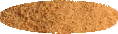
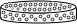

CONSOLIDATION TEST
Objective:
To determine the coefficient of consolidation of a soil sample by conducting a one dimensional
consolidation test using a fixed ring type consolidometer.
Apparatus used:
Fixed ring type consolidometer, Specimen ring, Porous stones, Filter paper, Guide ring, Outer ring,
Pressure pad, Steel ball, Stop watch, Loading device etc.
Take the soil sample in a container and mix it with water until a fine paste is formed.



Saturate the porous stones by submerging them in distilled water for 4-8 hours prior to the conduction of the experiment.
Measure the weight of empty specimen ring.


Weight of empty specimen ring = _________ g
Fill the specimen ring with the wet soil sample.


Measure the weight of specimen ring with wet soil sample.
Weight of specimen ring + wet soil, W2 = _________ g
Assemble the consolidometer. Place the porous stone at the bottom and place a filter paper. Then keep the specimen ring with soil above the filter paper and again place a filter paper and a porous stone above it respectively.
Select following apparatus in appropriate order to place it on the consolidometer
Porous stone 1 Filter paper 1 Specimen ring Filter paper 2 Porous stone 2
with soil
Top view of consolidometer
Close the consolidometer with the lid.
Top view of consolidometer

Side view of consolidometer
Position the pressure pad centrally on the top porous stone.
Mount the mould assembly on the loading frame and centre it such that the load applied is axial.
Connect the mould assembly to the water reservoir and the sample is allowed to saturate.
Place the dial gauge at proper position to measure the vertical compression of the specimen.
Apply the load to the assembly and note the initial settlement. Start the stopwatch simultaneously and take the dial gauge readings at regular intervals, until 90% consolidation is reached, i.e., within 24 hours.
Zoomed view of dial guage

Stopwatch (3x faster)
| Elapsed time (min) | √t | Dial gauge reading (div) |
|---|
Observations :
| Elapsed time (min) | √t | Dial gauge reading (div) |
|---|
Height of soil specimen, H = 2cm
Change in height of soil specimen,
ΔH = (Initial - Final dial gauge reading) x Least count of dial gauge
Least count of dial gauge = 0.001
Calculation :
Drainage path, d = H - ΔH⁄2⁄2 =Characteristic Curve
Log t method
Description- Plot the dial gauge readings v/s the elapsed time on a semi log graph sheet
- Join the points thus plotted with a smooth curve
- Draw a tangent to this curve
- Draw a horizontal line connecting the points which are showing a horizontal pattern in the plotted curve; this point will be d100
- Draw a vertical line from the first point of the plotted curve which gives us t1
- Multiply the t1 value by 4, the derived value should be plotted as t2 and should be carried over to the curve path, which is point C
- Measure the vertical distance between point B and point C and multiply the value by 2, we will derive the value of z0
- Draw the horizontal line corresponding to the z0 height, this will provide d0
- The average of d0 and d100 will give us the d50 value
- Now draw a horizontal line from d50 point and join to the plotted curve, the point thus derived is point F
- Draw a vertical line from F and thus we will get t50
Calculations
Variables used in calculationTime factor, Tv50 = 0.1963
Time corresponding to 50% consolidation, t50 = 1.5min
Drainage path, d = 0.983
Characteristic Curve
√t method
Description- Plot the dial gauge readings v/s √t on a normal graph sheet
- Join the points with a smooth curve
- Now draw a tangent to the curve and the point of intersection as A in y-axis and as B in x-axis
- Multiply the value of B by 1.15 and mark the point C on the x-axis
- Now join the points A and C
- Mark the point of intersection of line AC to the curve as point D
- Draw a vertical line joining the point D to the x-axis, this will provide us √t90 value from the graph
Calculations
Variables used in calculationTime factor, Tv90 = 0.845
Time corresponding to 90% consolidation, t90 = 2.66min
Drainage path, d = 0.983
Inference:
The coefficient of consolidation obtained by root t and log t method is 2.5 and 2.067x10-3 cm2/sec. As the consolidation value ranges between 1 to 6 cm2 sec the soil can be characterized as Boston blue clay (marine deposit of glacial clay, composed partially of illite) Remolded.